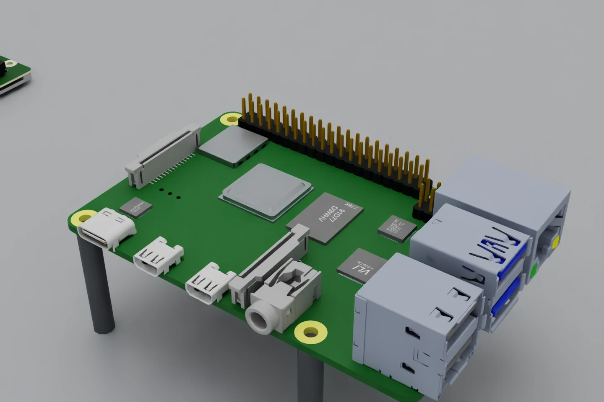
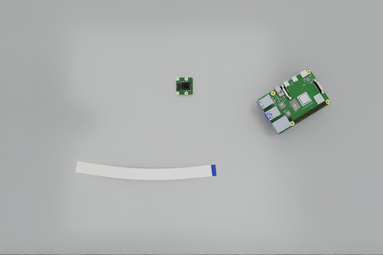

The final capture is being checked. The image viewer, measurements and video will appear here once all validated results are ready. This page refreshes its data automatically. Follow current progress on the live lab page.
EXPERIMENT 010 / PI-SPECIFIC PERCEPTION
First, learn
what we’re looking at.
The camera socket, the cable body, and the two very different ends. A first learned model now separates them in images of our Raspberry Pi workcell.
We improved the board scene, captured two fixed camera views, then trained a small RGB segmentation network. The test set was rendered after model selection. You can inspect every test image and compare the network’s output with the offline labels below.
Follow the current runReview the refined CAD →
Ordinary-test foreground mean IoU. Five task classes, pooled pixels within each class.
Held-out images from 56 new static scenes. Two fixed views per scene.
Robot actions. No grasp or insertion policy is enabled by this experiment.
The experiment data could not load. Reload this page or open the downloadable reports at the bottom.
01 / IMPROVE THE INPUT
Give vision something worth learning.
More of the actual board
The Pi’s major parts still come from the imported STEP assembly. We recovered 102 small package footprints from Raspberry Pi’s mechanical drawing, added seven readable board labels, and split each ribbon connector into its existing 15 contact solids and two polymer solids.
Package types, heights, label typography and finishes are approximations. We keep that distinction explicit so visual detail does not get mistaken for measurement.
Variation without changing cable dimensions
The ribbon keeps its 200 mm arc length, 16 mm width and opposite exposed faces. Each scene changes its yaw, position, shallow bow and which face is up. The board rotates through a full turn, with its supports moving together.
Desk tone and lighting vary too. Cable shapes are authored static meshes, not settled deformation from a calibrated solver.
Before-and-after views, socket close-up and board orbit · Official Pi 4 drawing
02 / KEEP THE OBSERVATION HONEST
The model gets pixels.
Simulator labels teach the network during offline supervised training. At inference, a separate container receives the frozen weights and recorded camera images. It has no dataset labels, USD stage, simulator process, network connection or GPU device.
RGB + annotation
192 training images and 48 validation images. Both views of a scene stay in the same split. Validation overlap selects the frozen checkpoint.
RGB → six-class mask
A small U-Net sees the image tensor only. Camera identity, sequence, timestamp and calibration ID validate ingress; they are not network features.
Prediction + held-out label
The scorer reads annotations after inference. Its measurements never enter a controller, reward, stage transition or action policy.
Recorded timestamps are host render-completion times. Replay uses that recorded clock; it does not demonstrate live exposure timing, synchronization or real-camera freshness. The camera model is an ideal pinhole at 768 × 512 pixels.
Model, training and evaluation details
The network has four encoder levels (12, 24, 48 and 96 channels), three skip-connected decoder levels, group normalization and a six-channel output. It is trained from scratch with weighted cross-entropy plus foreground Dice loss, AdamW and a cosine learning-rate schedule for 40 epochs. Training adds horizontal/vertical flips, brightness gain and small RGB noise. Those augmentations are not a measured sensor model.
The seed and model hashes are recorded in the training report. Evaluation contains 40 ordinary scenes and 16 challenge scenes. Test results do not select the checkpoint or alter its weights. All splits reuse the same CAD assets, camera placements and rendering pipeline, so they measure scene variation within this synthetic setup, not transfer to a real camera.
03 / LOOK AT THE EVIDENCE
Inspect every held-out view.
Start with the raw camera frame. Then switch to the predicted mask or the simulator annotation used only by the offline scorer. Coloured regions show class labels, not reliable grasp points or insertion targets.
- Cable body
- Contacts
- Stiffener
- CSI camera socket
- DSI display socket

The selected image could not load. Choose another view or reload the page.
The desk camera shows the loose cable; the board camera resolves the sockets. The close-up often does not see the cable at all. A correct empty prediction is useful, but it is not counted as a visible-object localization success.
What the first model can separate.
Intersection-over-union measures how well the predicted pixels overlap the labelled pixels. The table keeps ordinary poses and challenges separate. A high mask score does not establish tip pose, clearance or insertion success.
| Class | Ordinary / 80 images | Challenge / 32 images | Desk / all 56 | Board / all 56 |
|---|
Motion remains disabled.
This is a segmentation baseline. It does not estimate a verified cable-tip frame, socket mouth plane, insertion depth or latch state. Predicted component centroids are review measurements only. We have not validated the model on a real image, calibrated its uncertainty, or connected it to tactile feedback.
Stress cases, including the misses
Two independent scenes per challenge, each seen by both cameras. This small set exposes failure modes; it is too small to estimate a deployment failure rate. “Dim light” and “glare” change dome-light intensity while other lights remain active; neither is calibrated to a physical exposure.
| Condition | Images | Foreground mean IoU | CSI false positives / absent views |
|---|
Object review uses the largest connected component with at least eight pixels. The 12-pixel centroid check is a descriptive image-space metric, not an insertion tolerance. False positives on absent objects are reported separately. Softmax values are uncalibrated scores, not guarantees.
Watch the perception review.
A montage of selected ordinary cases and every challenge condition. The left panel is camera RGB; the right panel overlays the learned classes. These are independent static scenes shown for inspection, not continuous robot motion or real-time inference.
Which cameras? Which model next?
The live page now maps all camera positions and separates our two virtual RGB inputs from the proposed physical sensors. It also explains the DINOv3 / SAM 3 comparison for the next perception stage. Stronger candidates have not replaced this measured baseline.
04 / THE NEXT EXPERIMENT
From regions to a usable grasp.
The full system architecture and skill roadmap covers tooling, tactile sensing, mechanics identification and the later vision-action/RL work. The phone-style press-on connector remains a separate Stage 2 task.
Open the reports. Repeat the run.
Full held-out evaluation · Training and checkpoint selection · Capture scope and hashes · Ideal camera parameters · Isolated replay verification
Commands, assumptions and test evidence on GitHub
This supersedes the generic scene for new task perception work. The earlier static-camera prototype remains available as historical evidence, including its endpoint failures.